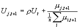
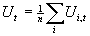
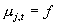
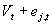
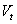
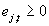

“Computational Methods to Measure the Life of a News Scandal.”
Ahlam Fakhar and Michael S. Rimler
July 17, 2002
Every day news organizations search for a ‘scoop,’ a story which will excite their reader base and even enlarge that base. One type of news story that, at least initially, can be reported by a single news organization alone is a scandal. If the editor of the New York Times receives an anonymous letter about an important figure’s unethical conduct, then the New York Times may have sole ownership over breaking that story.
In any organization that reports on a scandal, whether they are breaking the story or just covering the existing scandal, the journalist possesses human capital skills that can embellish upon the story and make it more valuable. This embellishment could extend the life of the scandal much longer than without embellishment since the audience remains interested longer.
We attempt to model the ability to embellish in order to compare the actual life of the scandal with the longevity of the same news story with no embellishment. Preliminary results are not promising, thus more work must be undertaken in order to either check the validity of the results thus far or to discover shortcomings of the model that yield our particular results.
Model
In the model, one scandalous news event is reported on at any given time. The story is released and covered until a new scandal takes place. At each period of time, the reporter reports the new scandal, reports the information on the existing scandal with no embellishment, or reports the old scandal by embellishing on it. The lifetime of a scandal could measure multiple periods.
There are three types of periods in the life of any scandal. The “breaking period” when the story is discovered by the reporters. In this period, only those who know the results can report. In the “coverage period”, all the reporters know about the event and at the same time new information is given to one of the reporters. The reporters receive an additional payoff from processing the information and embellishing on it. To constrain the scandal to a life span, we include in the model what we call an “end game rule”. This rule applies when the subject decides to intervene and end the controversy by admitting to the scandal or when, and given the existence of a new scandal, the reporters decide to move on to the new story rather than reporting and/or embellishing on the old one.
In each stage if the game, there are three key players:
- Two reporters: R1 and R2
- The subject (i.e. target) of the scandal
Assumptions:
1/ The reporters receive the initial information at time t=0 and report it on it starting from the second period,
2/ Only one piece of information is released each time.
Preferences for a reporter are represented by the utility function:



(new information, embellishment ability) = 
 = Value of new information (reduced form of reader’s demand function)
 : Value of embellishment by reporter j
We assume that the players play the Nash Equilibrium of the stage game by analyzing their expected payoffs.[1] The game starts with the assumption that nature moves first, making three draws. It decides whether to release a new scandal with probability ps, and, conditional on a new scandal being released, it assigns it to either reporter with equal probability. Nature also decides who gets the new information on the existing scandal by assigning the new information to Reporter 1 with probability p1. Strategies available to the subject are to either admit (A) or deny (D) the scandal. Strategies available to the reporters are to either embellish on the existing scandal (and new information if available) (E), not embellish at all (NE), or report on the new scandal (NS). Players do not know the state of nature before making their decisions. Given the state of nature, there are 18 terminal nodes in the extensive form game. This results on 108 terminal nodes in the full extensive form.
Preliminary results:
The Nash equilibrium in each period has each reporter not embellishing and the subject admitting to the scandal. No new scandal is ever adopted. The identified Nash equilibrium appears to be theoretically consistent, however, the fact that it persists in every period is counter intuitive. Also, given the discounting rate on the value of the current scandal, we would expect that given a long enough horizon the new scandal to be adopted. These preliminary results indicate that more refinement of the model must be done, either as a robustness check or to discover modeling inconsistencies.
Further
possible improvements on the model:
1/ Model the ability to embellish by the reporters
2/ Model the value to the readers
3/ Make the value to the readers exogenous and see what occurs as this value increases.